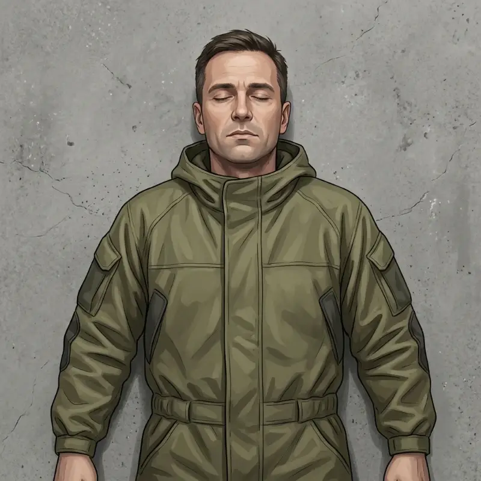
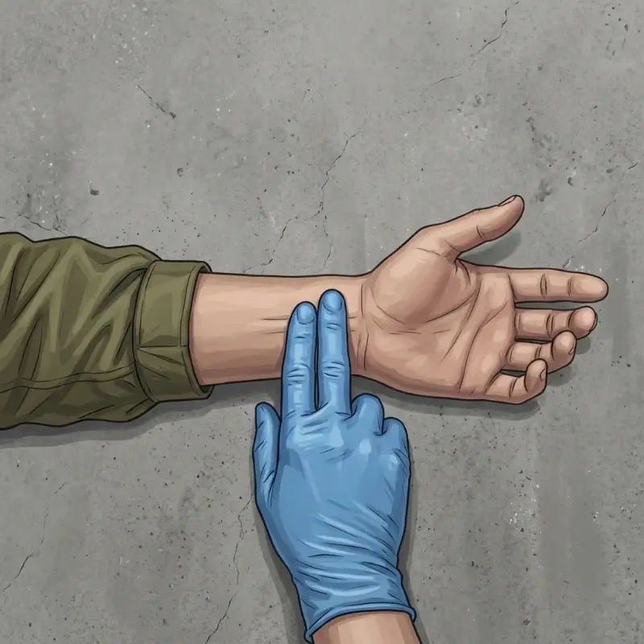
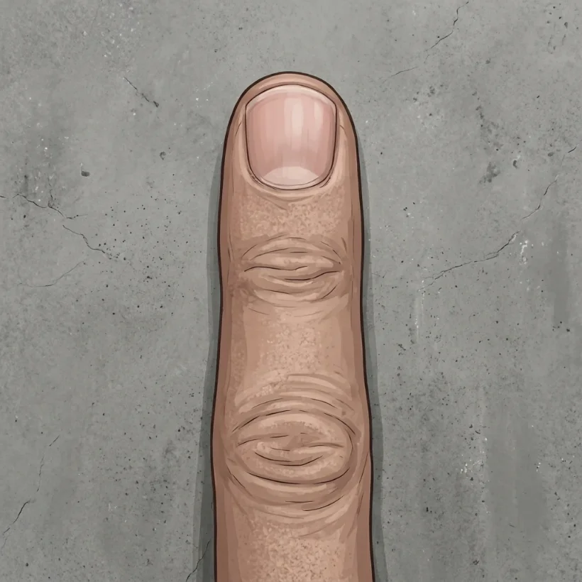
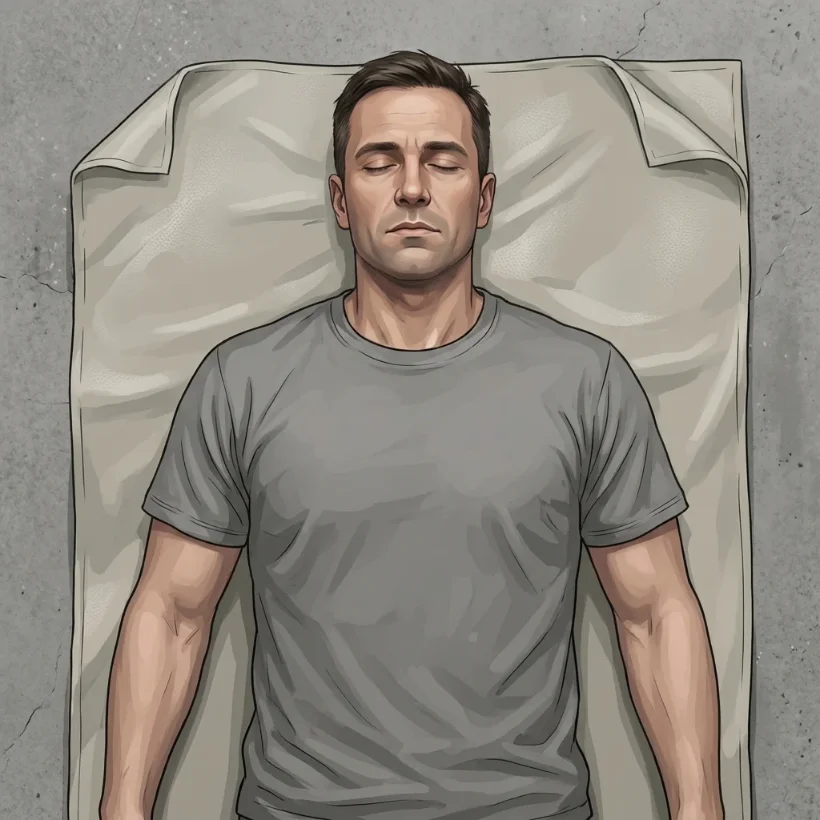

Практичне заняття № 6
Особливості хімічної зброї. Медико-тактична характеристика осередку хімічного зараження. Ураження бойовими отруйними речовинами. Техніка безпеки.
Працюйте самостійно, без підручника і без обговорення з сусідами. Час — до кінця пари.
Як виконувати
- Введіть прізвище, ім’я, групу і номер варіанта, який назвав викладач. Натисніть «Почати».
- Виконайте всі 4 блоки. Тести: оберіть одну відповідь. Алгоритмічні задачі: оберіть одну відповідь. Ситуаційні задачі: прочитайте умову і дайте відповіді на питання під нею. Відповідність: оберіть пару в кожному рядку. Послідовність: натискайте кроки по черзі.
- Відповіді можна змінювати, поки не натиснули «Завершити». Завершити можна лише після відповіді на всі завдання. Внизу видно, скільки вже виконано.
- Натисніть «Завершити і отримати оцінку». Результат автоматично потрапить до викладача. Пройти контроль можна один раз.
- Покажіть екран з результатом викладачу.
Якщо сторінку випадково закрили — відкрийте посилання знову на тому самому пристрої: відповіді збережуться.
Усього 69 балів. Оцінка за 5-бальною шкалою: 90–100 % — «5», 75–89 % — «4», 60–74 % — «3», менше 60 % — «2».
Практичні навички заняття
Кожна навичка — практичне вміння з РП у вигляді ситуації або міні-гри з реальною сценою. Неправильна дія має наслідок: ви бачите, що сталося з людьми, а шкала стану падає. Критична помилка — невдача, навичку доведеться почати заново. Після правильного кроку бачите обґрунтування.
Сортування START
Навичка з РПОК: первинне медичне сортування при масовому хімічному ураженні за алгоритмом START. Порядок: ходить? → дихає (якщо ні — відкрити дихальні шляхи)? → ЧД понад 30? → пульс на променевій артерії / капілярне наповнення понад 2 с? → виконує прості команди? Натискайте номер постраждалого, щоб перейти до нього.
Дихання 15 с × 4

Пульс на променевій артерії

Капілярне наповнення норма ≤ 2 с

Психічний стан
Навичка з РПОК: безпечне видалення забрудненого одягу, первинна деконтамінація шкіри та промивання очей. Оберіть дію або інструмент праворуч. Коли інструмент потребує дії на тілі — натисніть на постраждалого або на краплю. 1 с утримання кнопки води = 2 хв.

Тренування перед контролем
Тут відповідь видно одразу. Результати нікуди не надсилаються.
Натисніть картку, щоб перевернути.